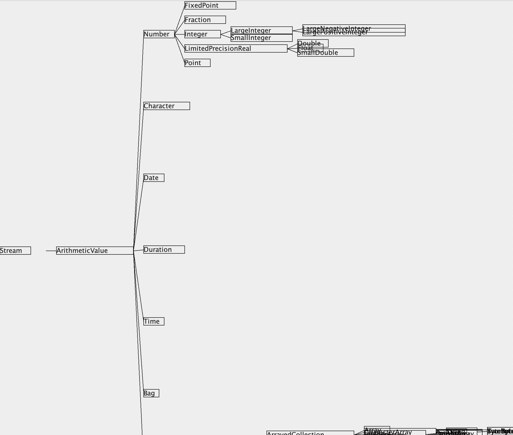
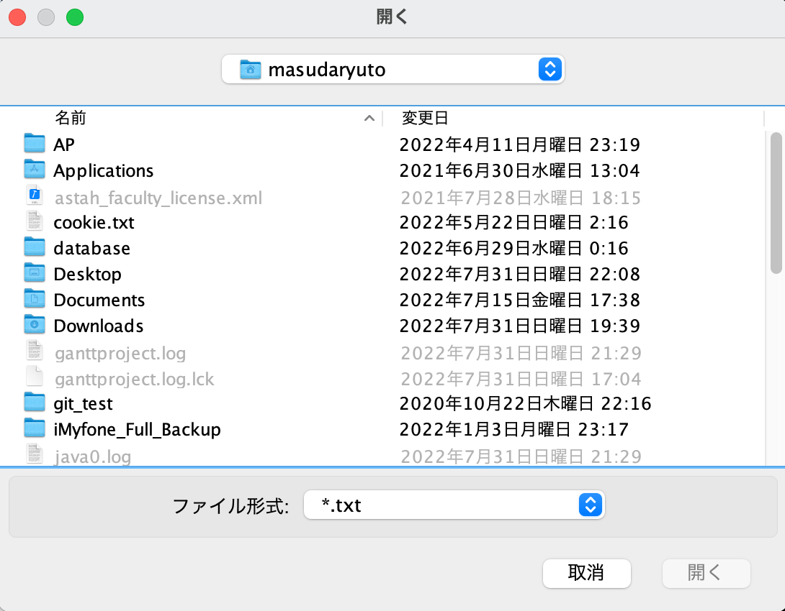
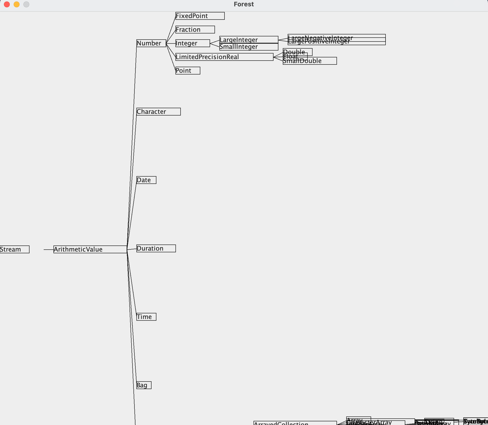

$ unzip /Users/masudaryuto/Desktop/TreeProject.zip Archive: /Users/masudaryuto/Desktop/TreeProject.zip creating: TreeProject/ inflating: __MACOSX/._TreeProject creating: TreeProject/Forest.app/ inflating: __MACOSX/TreeProject/._Forest.app creating: TreeProject/forest/ inflating: TreeProject/.DS_Store inflating: __MACOSX/TreeProject/._.DS_Store inflating: TreeProject/LICENSE inflating: TreeProject/build.xml inflating: TreeProject/Makefile inflating: TreeProject/?????形?????????-Swing???- ( Swing?????????????????? ).webloc inflating: TreeProject/semilattice.txt inflating: TreeProject/README.md inflating: TreeProject/clang-format-for-java.yaml inflating: TreeProject/forest.mf creating: TreeProject/Forest.app/Contents/ inflating: TreeProject/forest/Parser.java inflating: TreeProject/forest/Observable.java inflating: TreeProject/forest/DragData.java inflating: TreeProject/forest/Data.java creating: TreeProject/forest/controller/ inflating: TreeProject/forest/Vector2.java inflating: TreeProject/forest/File.java inflating: TreeProject/forest/Main.java creating: TreeProject/forest/model/ inflating: TreeProject/forest/OnDragSubject.java creating: TreeProject/forest/view/ inflating: TreeProject/forest/Animator.java creating: TreeProject/Forest.app/Contents/MacOS/ creating: TreeProject/Forest.app/Contents/Resources/ inflating: TreeProject/Forest.app/Contents/Info.plist inflating: TreeProject/Forest.app/Contents/PkgInfo inflating: TreeProject/forest/controller/Controller.java inflating: TreeProject/forest/model/Model.java creating: TreeProject/forest/view/renderer/ creating: TreeProject/forest/view/render/ inflating: TreeProject/forest/view/View.java inflating: TreeProject/Forest.app/Contents/MacOS/applet inflating: TreeProject/Forest.app/Contents/Resources/applet.rsrc creating: TreeProject/Forest.app/Contents/Resources/description.rtfd/ creating: TreeProject/Forest.app/Contents/Resources/Scripts/ inflating: TreeProject/Forest.app/Contents/Resources/applet.icns creating: TreeProject/forest/view/renderer/swing/ creating: TreeProject/forest/view/renderer/console/ inflating: TreeProject/forest/view/render/Node.java creating: TreeProject/forest/view/render/brunch/ creating: TreeProject/forest/view/render/reef/ creating: TreeProject/forest/view/render/root/ inflating: TreeProject/forest/view/render/Renderable.java inflating: TreeProject/forest/view/render/GenericRenderable.java inflating: TreeProject/Forest.app/Contents/Resources/description.rtfd/TXT.rtf inflating: TreeProject/Forest.app/Contents/Resources/Scripts/main.scpt inflating: __MACOSX/TreeProject/Forest.app/Contents/Resources/Scripts/._main.scpt inflating: TreeProject/forest/view/renderer/swing/RootRenderer.java inflating: TreeProject/forest/view/renderer/swing/ReefRenderer.java inflating: TreeProject/forest/view/renderer/swing/BrunchRenderer.java inflating: TreeProject/forest/view/renderer/swing/Utility.java inflating: TreeProject/forest/view/renderer/console/RootRenderer.java inflating: TreeProject/forest/view/renderer/console/ReefRenderer.java inflating: TreeProject/forest/view/renderer/console/BrunchRenderer.java inflating: TreeProject/forest/view/render/brunch/RendererBase.java inflating: TreeProject/forest/view/render/brunch/Brunch.java inflating: TreeProject/forest/view/render/reef/RendererBase.java inflating: TreeProject/forest/view/render/reef/Reef.java inflating: TreeProject/forest/view/render/root/Root.java inflating: TreeProject/forest/view/render/root/RendererBase.java
cd TreeProject
$ ls * LICENSE Makefile README.md build.xml clang-format-for-java.yaml forest.mf semilattice.txt 四角形の描画-Swing版- ( Swingサンプル集 ).webloc Forest.app: Contents forest: Animator.java Main.java Vector2.java Data.java Observable.java controller DragData.java OnDragSubject.java model File.java Parser.java view
$ make
env LC_ALL=ja_JP.UTF-8 ant all
Picked up _JAVA_OPTIONS: -Dfile.encoding=UTF-8
Buildfile: /Users/masudaryuto/Desktop/TreeProject/build.xml
prepare:
[mkdir] Created dir: /Users/masudaryuto/Desktop/TreeProject/Classes
[exec] 2022年 7月31日 日曜日 22時09分45秒 JST
compile:
[javac] Compiling 28 source files to /Users/masudaryuto/Desktop/TreeProject/Classes
[javac] Picked up _JAVA_OPTIONS: -Dfile.encoding=UTF-8
[exec] 2022年 7月31日 日曜日 22時09分48秒 JST
jar:
[jar] Building jar: /Users/masudaryuto/Desktop/TreeProject/forest.jar
[exec] 2022年 7月31日 日曜日 22時09分48秒 JST
all:
[exec] 2022年 7月31日 日曜日 22時09分48秒 JST
BUILD SUCCESSFUL
Total time: 3 seconds
$ ls *
LICENSE
Makefile
README.md
build.xml
clang-format-for-java.yaml
forest.jar
forest.mf
semilattice.txt
四角形の描画-Swing版- ( Swingサンプル集 ).webloc
Classes:
forest
Forest.app:
Contents
forest:
Animator.java Main.java Vector2.java
Data.java Observable.java controller
DragData.java OnDragSubject.java model
File.java Parser.java view
$ make install
env LC_ALL=ja_JP.UTF-8 ant install
Picked up _JAVA_OPTIONS: -Dfile.encoding=UTF-8
Buildfile: /Users/masudaryuto/Desktop/TreeProject/build.xml
prepare:
[exec] 2022年 7月31日 日曜日 22時11分22秒 JST
compile:
[exec] 2022年 7月31日 日曜日 22時11分22秒 JST
jar:
[exec] 2022年 7月31日 日曜日 22時11分22秒 JST
all:
[exec] 2022年 7月31日 日曜日 22時11分22秒 JST
install:
[copy] Copying 1 file to /Users/masudaryuto/Desktop/TreeProject/forest.app/Contents/Resources/Java
[exec] 2022年 7月31日 日曜日 22時11分22秒 JST
BUILD SUCCESSFUL
Total time: 0 seconds
実行するためのコマンドは以下の通りである。
java -jar forest.jarMac OS Xの場合には、アプリケーションForest.appをダブルクリックする方が簡便である。
Forest.app 
また、openコマンドでForest.appを開いても実行可能である。
open Forest.app
もし、開けない場合、拡張属性が原因の可能性があるので、「xattr -c Forest.app」を実行してみる必要がある。
以下に実行例を示す。


{kind=link}
{kind=link}